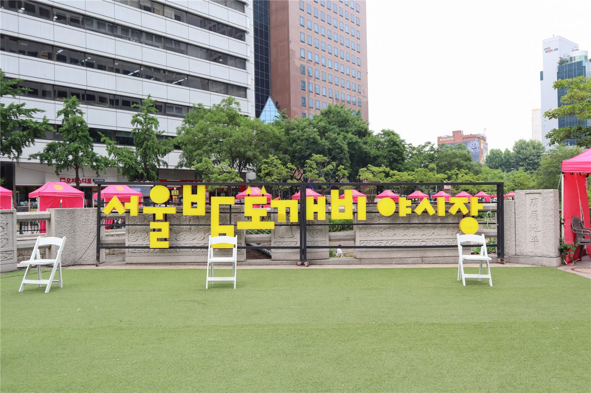

대구 병원 입점 김밥집에서 집단 식중독 의심… 70여 명 증상
대구의 한 병원에 입점한 김밥 판매점에서 음식을 먹은 뒤 70여 명이 식중독 의심 증상을 보여 보건당국이 역학조사에 착수했다. 환자들은 설사와 복통, 구토 등의 증상을 호소한 것으로 전해졌다.
전홍발 기자 · 2026.08.21
橋사회

보건당국은 판매점의 조리 환경과 보관 온도, 식재료 반입 경로를 확인하고 있으며, 환자와 조리 종사자의 검체를 채취해 원인균 검사를 진행 중이다. 결과가 나오기까지는 통상 며칠이 걸린다.
광고 문의 · 300×250여름철 김밥류는 식중독 위험이 상대적으로 높은 품목으로 분류된다. 밥과 계란, 어묵, 채소가 상온에서 함께 놓이는 시간이 길수록 세균 증식 조건이 갖춰지기 때문이다. 조리 후 2시간 이내 섭취, 보관 시 10도 이하 냉장이 기본 수칙으로 안내된다.
병원 내 매장이라는 점에서 이용자 구성도 함께 살펴지고 있다. 면역이 저하된 환자와 보호자가 이용할 경우 같은 균량에도 증상이 무겁게 나타날 수 있어, 당국은 증상자 명단을 확보해 경과를 확인하고 있다.
당국은 원인이 확인되기 전이라도 동일 브랜드나 인근 매장 이용 후 증상이 나타나면 의료기관을 찾도록 안내했다. 집단 발생 신고는 지역 보건소로 접수된다.
역학조사 결과에 따라 행정처분과 재발 방지 조치가 정해진다.
출처·참고 (사실 확인용 — 본문은 직접 재작성)
· 경향신문 (2026.08.18)
· 경향신문 (2026.08.18)